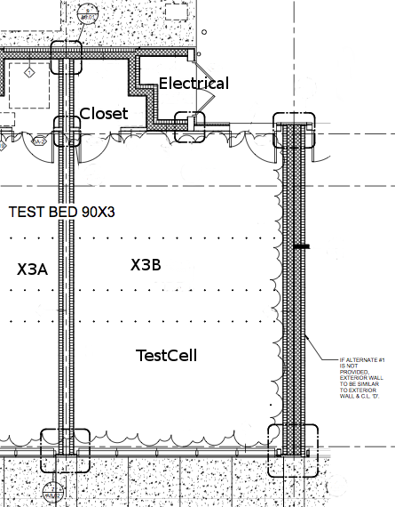
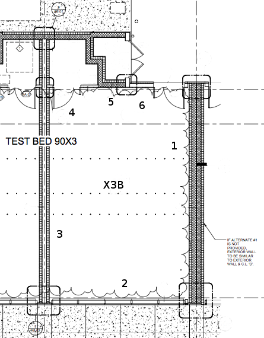
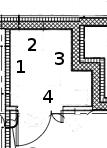
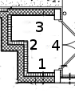

This package contains models of rooms in test cell X3B of the FLEXLAB at LBNL. The following image is a drawing of test cell X3B. It shows how the different rooms in this example are connected, as well as providing the names used in this example for each of the rooms.

There are separate models for each room in test cell X3B. The model for the test cell itself is located in Buildings.Rooms.FLEXLAB.Rooms.X3B.TestCell, the model for the connected closet is located at Buildings.Rooms.FLEXLAB.Rooms.X3B.Closet, and the model for the connected electrical room is located at Buildings.Rooms.FLEXLAB.Rooms.X3B.Electrical. Each of the models were developed using construction and parameter information taken from architectural drawings. Accurate use of the models will likely require combining all three room models to each other.
The models in this package are intended to be connected to each other to develop a model of the entirety of test cell X3B. Several of the connections are to be made between walls connecting the two spaces to each other. Detailed information on the wall in each test cell can be found in the documentation for that test cell. The connections between each room in the test cell are described below.
| Physical significance of connection | Port 1 | Port 2 |
|---|---|---|
| Heat transfer through the partition wall between the test cell and the closet | TestCell.surf_conBou[2] | Closet.surf_surBou[1] |
| Heat transfer through the door in the partition wall between the test cell and the closet | TestCell.surf_conBou[3] | Closet.surf_surBou[2] |
| Heat transfer through the wall separating the test cell and the electrical room | TestCell.surf_conBou[4] | Electrical.surf_surBou[1] |
| Heat transfer through the wall separating the closet and the electrical room | Closet.surf_conBou[1] | Electrical.surf_surBou[2] |
An example of how these room models are connected to create full test cell model can be found in Buildings.Rooms.FLEXLAB.Rooms.Examples.X3AWithRadiantFloor.
Extends from Modelica.Icons.Package (Icon for standard packages).| Name | Description |
|---|---|
| Model of LBNL User Test Facility Cell X3A | |
| Model of the closet connected to test cell X3A | |
| Model of the electrical room attached to test cell X3A |
This is a model for test cell 3B in the LBNL User Facility. This model is intended to represent the main space in test cell 3B. This documentation describes the wall constructions used to model test cell X3B. Documentation describing how it is to be combined to other room models to create a model of the full test cell can be found in Buildings.Rooms.FLEXLAB.Rooms.X3B.
There are 6 different wall sections described in the model. They are shown in the figure below.

The different wall sections are entered into the model according to the following table.
| Wall Section Number | Description | Location in Model | Corresponding Layer |
|---|---|---|---|
| 1 | East exterior wall | datConExt[4] | EWal |
| 2 | South exterior wall with windows | datConExtWin[1] | R16p8Wal |
| 3 | West wall separating X3B and X3A | datConBou[1] | celDiv |
| 4 | North partition wall separating X3B and the closet | Wall: datConBou[2] Door: datConBou[3] |
Wall: parCon Door: parDoo |
| 5 | North wall separating X3B and the electrical room | datConBou[4] | R52Wal |
| 6 | North exterior wall and door | Door: datConExt[1] Wall: datConExt[2] |
Door: extDoo Wall: R16p8Wal |
A seventh construction, not shown in the figure, models the ceiling. It is modeled in datConExt[3] using
the layer R20Wal.
The test cell can be configured with several different floor types. The options include radiant conditioning, a slab on grade floor with no conditioning, or a raised floor. Because of this uncertainty in floor design, a model of the floor itself is not included in this model. The user must include a model for the floor in any applications of this model.
Several of the connections in this model are intended to be connected to specific surfaces in other room models. The following table describes the connections to models outside of the X3A package. The connections in datConExt are not described in the table because they are connected to the external environment, and no additional heat port connections are necessary.
| Location in TestCell | Description of External Connection | Location in External Model |
|---|---|---|
| surf_conBou[1] | Temperature of test cell X3A | X3A.TestCellNoCelDiv.surf_surBou[2] |
| Type | Name | Default | Description |
|---|---|---|---|
| replaceable package Medium | PartialMedium | Medium in the component | |
| ParameterConstruction | datConPar[NConPar] | Data for partition construction | |
| Angle | lat | 0.66098585832754 | Latitude [rad] |
| Area | AFlo | 60.97 | Floor area [m2] |
| Length | hRoo | 3.6576 | Average room height [m] |
| Boolean | linearizeRadiation | true | Set to true to linearize emissive power |
| Construction10and23 | R16p8Wal | redeclare Data.Constructions... | |
| CellAndElectricalDividingWall | R52Wal | redeclare Data.Constructions... | |
| ASHRAE_901_2010Roof | R20Wal | redeclare Data.Constructions... | |
| ASHRAE901Gla | glaSys | redeclare Data.Constructions... | |
| PartitionWall | parCon | redeclare Data.Constructions... | |
| TestCellDividngWall | celDiv | redeclare Data.Constructions... | Construction of wall connecting to cell UF90X3B |
| PartitionDoor | parDoo | redeclare Data.Constructions... | Door used in partition walls in FLEXLAB test cells |
| ExteriorDoorInsulated | extDoo | redeclare Data.Constructions... | Construction of an exterior door |
| Exterior constructions | |||
| Integer | nConExt | 4 | Number of exterior constructions |
| Integer | nConExtWin | 1 | Number of window constructions |
| Partition constructions | |||
| Integer | nConPar | 0 | Number of partition constructions |
| Boundary constructions | |||
| Integer | nConBou | 4 | Number of constructions that have their outside surface exposed to the boundary of this room |
| Integer | nSurBou | 4 | Number of surface heat transfer models that connect to constructions that are modeled outside of this room |
| Convective heat transfer | |||
| InteriorConvection | intConMod | Buildings.HeatTransfer.Types... | Convective heat transfer model for room-facing surfaces of opaque constructions |
| CoefficientOfHeatTransfer | hIntFixed | 3.0 | Constant convection coefficient for room-facing surfaces of opaque constructions [W/(m2.K)] |
| ExteriorConvection | extConMod | Buildings.HeatTransfer.Types... | Convective heat transfer model for exterior facing surfaces of opaque constructions |
| CoefficientOfHeatTransfer | hExtFixed | 10.0 | Constant convection coefficient for exterior facing surfaces of opaque constructions [W/(m2.K)] |
| Nominal condition | |||
| MassFlowRate | m_flow_nominal | V*1.2/3600 | Nominal mass flow rate [kg/s] |
| Dynamics | |||
| Equations | |||
| Dynamics | energyDynamics | Modelica.Fluid.Types.Dynamic... | Formulation of energy balance |
| Dynamics | massDynamics | energyDynamics | Formulation of mass balance |
| Initialization | |||
| AbsolutePressure | p_start | Medium.p_default | Start value of pressure [Pa] |
| Temperature | T_start | Medium.T_default | Start value of temperature [K] |
| MassFraction | X_start[Medium.nX] | Medium.X_default | Start value of mass fractions m_i/m [kg/kg] |
| ExtraProperty | C_start[Medium.nC] | fill(0, Medium.nC) | Start value of trace substances |
| ExtraProperty | C_nominal[Medium.nC] | fill(1E-2, Medium.nC) | Nominal value of trace substances. (Set to typical order of magnitude.) |
| Advanced | |||
| Boolean | homotopyInitialization | = true, use homotopy method | |
| Type | Name | Description |
|---|---|---|
| VesselFluidPorts_b | ports[nPorts] | Fluid inlets and outlets |
| HeatPort_a | heaPorAir | Heat port to air volume |
| HeatPort_a | heaPorRad | Heat port for radiative heat gain and radiative temperature |
| HeatPort_a | surf_conBou[nConBou] | Heat port at surface b of construction conBou |
| HeatPort_a | surf_surBou[nSurBou] | Heat port of surface that is connected to the room air |
| input RealInput | uSha[nConExtWin] | Control signal for the shading device (removed if no shade is present) |
| input RealInput | qGai_flow[3] | Radiant, convective and latent heat input into room (positive if heat gain) [W/m2] |
| Bus | weaBus |
model TestCell "Model of LBNL User Test Facility Cell X3A"
extends Buildings.Rooms.MixedAir(AFlo=60.97,
nSurBou=4,
nConPar=0,
nConBou=4,
nConExt=4,
nConExtWin=1,
hRoo=3.6576,
surBou(
A = {6.645*3.09, 6.645*1.51, 6.645*0.91, 6.645*3.65},
each absIR=0.9,
each absSol=0.9,
each til=Buildings.HeatTransfer.Types.Tilt.Floor),
datConExt(
layers={extDoo,
R16p8Wal,
R20Wal,
EWal},
A={1.3716 * 2.39, 3.6576*2.52-2.39*1.3716, 6.6675*9.144,3.6576*9.144},
til={Buildings.HeatTransfer.Types.Tilt.Wall, Buildings.HeatTransfer.Types.Tilt.Wall, Buildings.HeatTransfer.Types.Tilt.Ceiling, Buildings.HeatTransfer.Types.Tilt.Wall},
azi={Buildings.HeatTransfer.Types.Azimuth.N,Buildings.HeatTransfer.Types.Azimuth.N, Buildings.HeatTransfer.Types.Azimuth.S, Buildings.HeatTransfer.Types.Azimuth.E}),
datConBou(
layers = {celDiv, parCon, parDoo, R52Wal},
A = {3.6576 * 9.144, 3.6576*2.886075-2.39*1.22, 2.39*1.22, 3.6576*1.2614},
til = {Buildings.HeatTransfer.Types.Tilt.Wall, Buildings.HeatTransfer.Types.Tilt.Wall, Buildings.HeatTransfer.Types.Tilt.Wall, Buildings.HeatTransfer.Types.Tilt.Wall},
azi = {Buildings.HeatTransfer.Types.Azimuth.W, Buildings.HeatTransfer.Types.Azimuth.N, Buildings.HeatTransfer.Types.Azimuth.N, Buildings.HeatTransfer.Types.Azimuth.N}),
datConExtWin(
layers={R16p8Wal},
A={6.6675*3.6576},
glaSys={glaSys},
hWin={1.8288},
wWin={5.88},
til={Buildings.HeatTransfer.Types.Tilt.Wall},
azi={Buildings.HeatTransfer.Types.Azimuth.S}),
intConMod=Buildings.HeatTransfer.Types.InteriorConvection.Temperature,
extConMod=Buildings.HeatTransfer.Types.ExteriorConvection.TemperatureWind,
lat=0.66098585832754);
replaceable Data.Constructions.OpaqueConstructions.ExteriorConstructions.Construction10and23
R16p8Wal;
replaceable Data.Constructions.OpaqueConstructions.DividingWalls.CellAndElectricalDividingWall
R52Wal;
replaceable Data.Constructions.OpaqueConstructions.Roofs.ASHRAE_901_2010Roof
R20Wal;
replaceable Data.Constructions.GlazingSystems.ASHRAE901Gla glaSys;
replaceable Data.Constructions.OpaqueConstructions.PartitionConstructions.PartitionWall
parCon;
replaceable Data.Constructions.OpaqueConstructions.DividingWalls.TestCellDividngWall
celDiv
"Construction of wall connecting to cell UF90X3B";
replaceable Data.Constructions.OpaqueConstructions.PartitionConstructions.PartitionDoor
parDoo
"Door used in partition walls in FLEXLAB test cells";
replaceable Data.Constructions.OpaqueConstructions.ExteriorConstructions.ExteriorDoorInsulated
extDoo "Construction of an exterior door";
Data.Constructions.OpaqueConstructions.ExteriorConstructions.Construction1
EWal;
end TestCell;

This is a model for the closet attached to test cell 3B in the LBNL User Facility. This documentation describes the wall constructions used in the closet. Documentation describing how it should be connected to other models in the package to form a complete model of test cell X3B can be found in Buildings.Rooms.FLEXLAB.Rooms.X3B.
There are four different wall sections connected to the closet modeled here. They are shown in the figure below.

The different wall sections are represented in the model according to the following table.
| Wall Section Number | Description | Location in Model | Corresponding Layer |
|---|---|---|---|
| 1 | West wall connected to X3A.Closet | datConBou[2] | celDiv |
| 2 | North wall on the exterior of the buildings | datConExt[1] | higIns |
| 3 | East wall connected to Electrical | datConBou[1] | higIns |
| 4 | Air space connected to partition wall and door in TestCell model | Wall: datSurBou[1] Door: datSurBou[2] |
There are two additional surfaces which are not included in the diagram. One is the model of the roof. It is
modeled in datConExt[2] using the layer roo. The other is the floor, which is modeled in
datConBou[3] using the layer slaCon.
Several of the connections in this model are intended to be connected to specific surfaces in other room models. The following table describes the connections to models outside of the X3B package. The connections in datConExt are not described in the table because they are connected to the external environment, and no additional heat port connections are necessary. A rationale for why the model is created this way is also provided if it is considered necessary.
| Location in Closet | Description of External Connection | Location in External Model | Rationale |
|---|---|---|---|
| surf_conBou[2] | X3A.Closet | X3A.ClosetNoCelDiv.surf_surBou[3] | |
| surf_conBou[3] | Ground temperature | There is no specific connection which is appropriate connection for this construction. surf_conBou[3] represents the floor of the room, and must be connected to a heat port representing the ground temperature. |
| Type | Name | Default | Description |
|---|---|---|---|
| replaceable package Medium | PartialMedium | Medium in the component | |
| ParameterConstructionWithWindow | datConExtWin[NConExtWin] | Data for exterior construction with window | |
| ParameterConstruction | datConPar[NConPar] | Data for partition construction | |
| Angle | lat | 0.66098585832754 | Latitude [rad] |
| Area | AFlo | 3.93 | Floor area [m2] |
| Length | hRoo | 3.6576 | Average room height [m] |
| Boolean | linearizeRadiation | true | Set to true to linearize emissive power |
| CellAndElectricalDividingWall | higIns | redeclare Data.Constructions... | High insulation wall. Between X3A closet and exterior, X3A closet and electrical room |
| TestCellDividngWall | celDiv | redeclare Data.Constructions... | Wall dividing the X3A closet and the X3B closet |
| ASHRAE_901_2010Roof | roo | redeclare Data.Constructions... | Construction of the roof of the closet in X3A |
| Exterior constructions | |||
| Integer | nConExt | 2 | Number of exterior constructions |
| Integer | nConExtWin | 0 | Number of window constructions |
| Partition constructions | |||
| Integer | nConPar | 0 | Number of partition constructions |
| Boundary constructions | |||
| Integer | nConBou | 3 | Number of constructions that have their outside surface exposed to the boundary of this room |
| Integer | nSurBou | 2 | Number of surface heat transfer models that connect to constructions that are modeled outside of this room |
| Convective heat transfer | |||
| InteriorConvection | intConMod | Buildings.HeatTransfer.Types... | Convective heat transfer model for room-facing surfaces of opaque constructions |
| CoefficientOfHeatTransfer | hIntFixed | 3.0 | Constant convection coefficient for room-facing surfaces of opaque constructions [W/(m2.K)] |
| ExteriorConvection | extConMod | Buildings.HeatTransfer.Types... | Convective heat transfer model for exterior facing surfaces of opaque constructions |
| CoefficientOfHeatTransfer | hExtFixed | 10.0 | Constant convection coefficient for exterior facing surfaces of opaque constructions [W/(m2.K)] |
| Nominal condition | |||
| MassFlowRate | m_flow_nominal | V*1.2/3600 | Nominal mass flow rate [kg/s] |
| Dynamics | |||
| Equations | |||
| Dynamics | energyDynamics | Modelica.Fluid.Types.Dynamic... | Formulation of energy balance |
| Dynamics | massDynamics | energyDynamics | Formulation of mass balance |
| Initialization | |||
| AbsolutePressure | p_start | Medium.p_default | Start value of pressure [Pa] |
| Temperature | T_start | Medium.T_default | Start value of temperature [K] |
| MassFraction | X_start[Medium.nX] | Medium.X_default | Start value of mass fractions m_i/m [kg/kg] |
| ExtraProperty | C_start[Medium.nC] | fill(0, Medium.nC) | Start value of trace substances |
| ExtraProperty | C_nominal[Medium.nC] | fill(1E-2, Medium.nC) | Nominal value of trace substances. (Set to typical order of magnitude.) |
| Advanced | |||
| Boolean | homotopyInitialization | = true, use homotopy method | |
| Type | Name | Description |
|---|---|---|
| VesselFluidPorts_b | ports[nPorts] | Fluid inlets and outlets |
| HeatPort_a | heaPorAir | Heat port to air volume |
| HeatPort_a | heaPorRad | Heat port for radiative heat gain and radiative temperature |
| HeatPort_a | surf_conBou[nConBou] | Heat port at surface b of construction conBou |
| HeatPort_a | surf_surBou[nSurBou] | Heat port of surface that is connected to the room air |
| input RealInput | uSha[nConExtWin] | Control signal for the shading device (removed if no shade is present) |
| input RealInput | qGai_flow[3] | Radiant, convective and latent heat input into room (positive if heat gain) [W/m2] |
| Bus | weaBus |
model Closet "Model of the closet connected to test cell X3A"
extends Buildings.Rooms.MixedAir(
hRoo = 3.6576,
AFlo = 3.93,
lat = 0.66098585832754,
nConExt = 2,
nConBou = 3,
nSurBou = 2,
nConExtWin = 0,
nConPar = 0,
surBou(
A = {3.6576 * 2.886075 - 2.39*1.22, 2.39 * 1.22},
each absIR = 0.9,
each absSol = 0.9,
each til=Buildings.HeatTransfer.Types.Tilt.Wall),
datConExt(
layers = {higIns, roo},
A = {3.6576 * 1.667, AFlo},
til = {Buildings.HeatTransfer.Types.Tilt.Wall, Buildings.HeatTransfer.Types.Tilt.Ceiling},
azi = {Buildings.HeatTransfer.Types.Azimuth.N, Buildings.HeatTransfer.Types.Azimuth.N}),
datConBou(
layers = {higIns, celDiv, slaCon},
A = {3.6576*1.524, 3.6576 * 1.524, 3.93},
til = {Buildings.HeatTransfer.Types.Tilt.Wall, Buildings.HeatTransfer.Types.Tilt.Wall, Buildings.HeatTransfer.Types.Tilt.Floor},
azi = {Buildings.HeatTransfer.Types.Azimuth.W, Buildings.HeatTransfer.Types.Azimuth.E, Buildings.HeatTransfer.Types.Azimuth.N}));
replaceable Data.Constructions.OpaqueConstructions.DividingWalls.CellAndElectricalDividingWall
higIns
"High insulation wall. Between X3A closet and exterior, X3A closet and electrical room";
replaceable Data.Constructions.OpaqueConstructions.DividingWalls.TestCellDividngWall
celDiv
"Wall dividing the X3A closet and the X3B closet";
replaceable Data.Constructions.OpaqueConstructions.Roofs.ASHRAE_901_2010Roof
roo
"Construction of the roof of the closet in X3A";
HeatTransfer.Data.OpaqueConstructions.Generic
slaCon(nLay=3, material={
Buildings.HeatTransfer.Data.Solids.Generic(
x=0.1524,
k=1.13,
c=1000,
d=1400,
nSta=5),
Buildings.HeatTransfer.Data.Solids.Generic(
x=0.127,
k=0.036,
c=1200,
d=40),
Buildings.HeatTransfer.Data.Solids.Generic(
x=0.2,
k=1.8,
c=1100,
d=2400)}) "Construction of the slab";
end Closet;

This is a model for the electrical room connected to test cell 3B in the LBNL User Facility. Other models are provided for the main space of the test cell and the connected closet. This documentation describes the wall constructions used in the electrical room model. For documentation describing how the room models are to be connected to develop a model of the entire X3B test cell see Buildings.Rooms.FLEXLAB.Rooms.X3B.
There are 4 different wall sections described in the model. They are shown in the figure below.

The different wall sections are entered into the model according to the following table.
| Wall Section Number | Description | Location in Model | Corresponding Layer |
|---|---|---|---|
| 1 | South air space connecting to TestCell | surBou[1] | |
| 2 | West air space connecting to Closet | surBou[2] | |
| 3 | North exterior wall | datConExt[1] | eleExt |
| 4 | East exterior door and wall | Wall: datConExt[2] Door: datConExt[3] |
Wall: eleExt Door: extDooUn |
There are two additional surfaces which are not included in the diagram. One is the model of the roof. It is
modeled in datConExt[4] using the layer roo. The other is the floor, which is modeled in
datConBou[1] using the layer slaCon.
Several of the connections in this model are intended to be connected to specific surfaces in other room models. The following table describes the connections to rooms which are not in the X3B package. The constructions in datConExt are not described in the table because they are connected to the external environment, and no additional heat port connections are necessary. A rationale for why the model is created this way is also provided if it is considered necessary.
| Location in Electrical | Description of External Connection | Rationale |
|---|---|---|
| surf_conBou[1] | Connection to ground temperature model | This port represents the bottom of the floor in the space. It is to be connected to a heat port representing the temperature of the ground. |
| Type | Name | Default | Description |
|---|---|---|---|
| replaceable package Medium | PartialMedium | Medium in the component | |
| ParameterConstructionWithWindow | datConExtWin[NConExtWin] | Data for exterior construction with window | |
| ParameterConstruction | datConPar[NConPar] | Data for partition construction | |
| Angle | lat | 0.66098585832754 | Latitude [rad] |
| Area | AFlo | 2.39 | Floor area [m2] |
| Length | hRoo | 3.6576 | Average room height [m] |
| Boolean | linearizeRadiation | true | Set to true to linearize emissive power |
| Construction3 | eleExt | redeclare Data.Constructions... | Construction describing the exterior walls in the electrical room |
| ExteriorDoorUninsulated | extDooUn | redeclare Data.Constructions... | Construction describing the door in the electrical room |
| ASHRAE_901_2010Roof | roo | redeclare Data.Constructions... | Construction describing the roof of the electrical room |
| Exterior constructions | |||
| Integer | nConExt | 4 | Number of exterior constructions |
| Integer | nConExtWin | 0 | Number of window constructions |
| Partition constructions | |||
| Integer | nConPar | 0 | Number of partition constructions |
| Boundary constructions | |||
| Integer | nConBou | 1 | Number of constructions that have their outside surface exposed to the boundary of this room |
| Integer | nSurBou | 2 | Number of surface heat transfer models that connect to constructions that are modeled outside of this room |
| Convective heat transfer | |||
| InteriorConvection | intConMod | Buildings.HeatTransfer.Types... | Convective heat transfer model for room-facing surfaces of opaque constructions |
| CoefficientOfHeatTransfer | hIntFixed | 3.0 | Constant convection coefficient for room-facing surfaces of opaque constructions [W/(m2.K)] |
| ExteriorConvection | extConMod | Buildings.HeatTransfer.Types... | Convective heat transfer model for exterior facing surfaces of opaque constructions |
| CoefficientOfHeatTransfer | hExtFixed | 10.0 | Constant convection coefficient for exterior facing surfaces of opaque constructions [W/(m2.K)] |
| Nominal condition | |||
| MassFlowRate | m_flow_nominal | V*1.2/3600 | Nominal mass flow rate [kg/s] |
| Dynamics | |||
| Equations | |||
| Dynamics | energyDynamics | Modelica.Fluid.Types.Dynamic... | Formulation of energy balance |
| Dynamics | massDynamics | energyDynamics | Formulation of mass balance |
| Initialization | |||
| AbsolutePressure | p_start | Medium.p_default | Start value of pressure [Pa] |
| Temperature | T_start | Medium.T_default | Start value of temperature [K] |
| MassFraction | X_start[Medium.nX] | Medium.X_default | Start value of mass fractions m_i/m [kg/kg] |
| ExtraProperty | C_start[Medium.nC] | fill(0, Medium.nC) | Start value of trace substances |
| ExtraProperty | C_nominal[Medium.nC] | fill(1E-2, Medium.nC) | Nominal value of trace substances. (Set to typical order of magnitude.) |
| Advanced | |||
| Boolean | homotopyInitialization | = true, use homotopy method | |
| Type | Name | Description |
|---|---|---|
| VesselFluidPorts_b | ports[nPorts] | Fluid inlets and outlets |
| HeatPort_a | heaPorAir | Heat port to air volume |
| HeatPort_a | heaPorRad | Heat port for radiative heat gain and radiative temperature |
| HeatPort_a | surf_conBou[nConBou] | Heat port at surface b of construction conBou |
| HeatPort_a | surf_surBou[nSurBou] | Heat port of surface that is connected to the room air |
| input RealInput | uSha[nConExtWin] | Control signal for the shading device (removed if no shade is present) |
| input RealInput | qGai_flow[3] | Radiant, convective and latent heat input into room (positive if heat gain) [W/m2] |
| Bus | weaBus |
model Electrical
"Model of the electrical room attached to test cell X3A"
extends Buildings.Rooms.MixedAir(
hRoo = 3.6576,
AFlo = 2.39,
lat = 0.66098585832754,
nSurBou = 2,
nConExt=4,
nConExtWin=0,
nConPar=0,
nConBou=1,
surBou(
A = {3.6576 * 1.2641, 3.6576 * 1.524},
each absIR = 0.9,
each absSol = 0.9,
each til = Buildings.HeatTransfer.Types.Tilt.Wall),
datConExt(
layers = {eleExt, eleExt, extDooUn, roo},
A = {3.6576 * 1.26413, 3.6576 * 1.524 - 2.38658 * 1.524, 2.38658*1.524, 2.39},
til = {Buildings.HeatTransfer.Types.Tilt.Wall, Buildings.HeatTransfer.Types.Tilt.Wall, Buildings.HeatTransfer.Types.Tilt.Wall, Buildings.HeatTransfer.Types.Tilt.Ceiling},
azi = {Buildings.HeatTransfer.Types.Azimuth.N, Buildings.HeatTransfer.Types.Azimuth.E, Buildings.HeatTransfer.Types.Azimuth.E, Buildings.HeatTransfer.Types.Azimuth.N}),
datConBou(
layers = {slaCon},
A = {2.39},
til = {Buildings.HeatTransfer.Types.Tilt.Floor},
azi = {Buildings.HeatTransfer.Types.Azimuth.N}));
replaceable Data.Constructions.OpaqueConstructions.ExteriorConstructions.Construction3
eleExt "Construction describing the exterior walls in the electrical room";
replaceable Data.Constructions.OpaqueConstructions.ExteriorConstructions.ExteriorDoorUninsulated
extDooUn "Construction describing the door in the electrical room";
replaceable Data.Constructions.OpaqueConstructions.Roofs.ASHRAE_901_2010Roof
roo
"Construction describing the roof of the electrical room";
HeatTransfer.Data.OpaqueConstructions.Generic
slaCon(nLay=3, material={
Buildings.HeatTransfer.Data.Solids.Generic(
x=0.1524,
k=1.13,
c=1000,
d=1400,
nSta=5),
Buildings.HeatTransfer.Data.Solids.Generic(
x=0.127,
k=0.036,
c=1200,
d=40),
Buildings.HeatTransfer.Data.Solids.Generic(
x=0.2,
k=1.8,
c=1100,
d=2400)}) "Construction of the slab";
end Electrical;